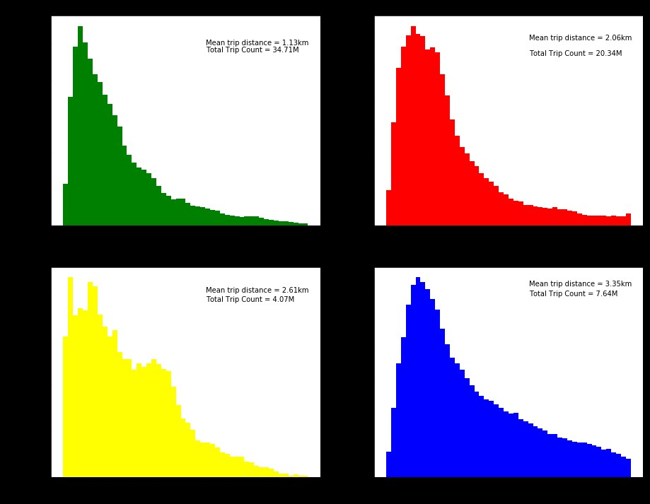
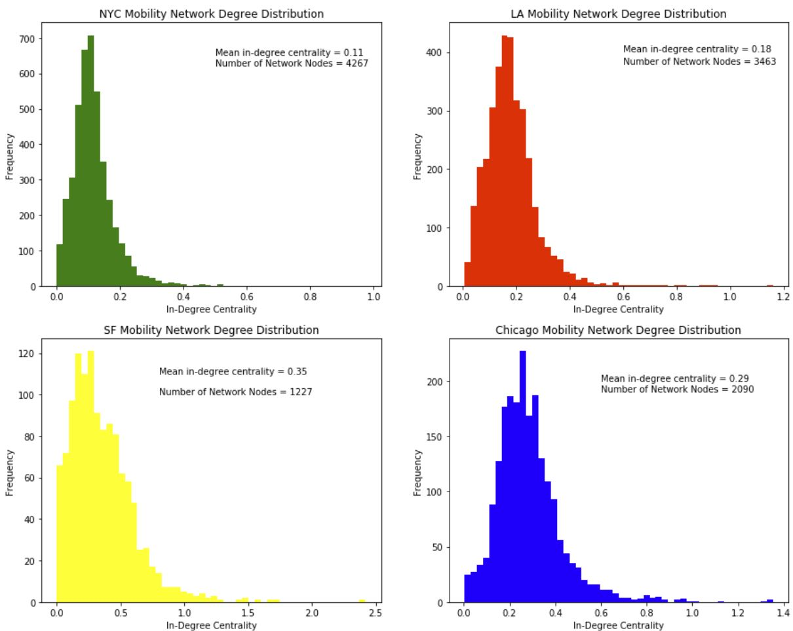
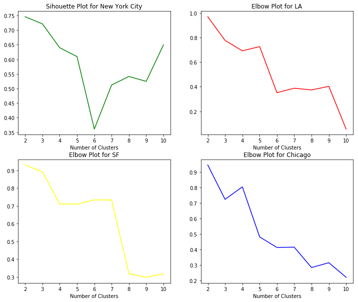

Understanding mobility and commuting patterns can be valuable for urban policymakers, with implications for a range of urban policy issues such as public transit planning, traffic management, and zoning/development decisions. Traditionally, policymakers have relied on data gathered from travel surveys, which can have limitations such as: Cost and frequency, small sample size, limited time horizons, and a failure to capture non-resident travel patterns.
Our research builds on the existing mobility literature by leveraging cell phone trace data from four US cities to describe and predict origin-destination trip demand using machine learning approaches, allowing for prediction of trip generation at a high spatial and temporal granularity. Specifically, network analysis and clustering are used to describe the structure of mobility networks. The research has implications for understanding the unique mobility patterns in each of the four cities, as well as any common patterns across geographies, which may be relevant or urban planners and policymakers in the respective cities.
The purpose of the study is to demonstrate the value of cell phone trace data as a tool for city planners that can provide valuable information on human mobility at a granular spatial and temporal degrees while overcoming some of the limitations of traditional data sources such as surveys. The remainder of the progress report is structured in the following sections: Data, Methodology, Results, and Conclusions.
The research draws primarily on data provided by the project sponsor, Arcadis, who purchased the data set from Carto, who sourced the data from multiple undisclosed third-party vendors. These vendors generate the data by counting GPS pings generated by mobile phones, tablets, wearables, or computers where certain applications have permission to access a users’ location. The primary data set received from Carto is aggregated information generated from the GPS pings. The data are counts of people moving between an origin area and a destination area, divided into 30 minute intervals for morning commute time (6:00 -10:30 AM) during weekdays (Mon-Fri). The data set covers four months of activity around four cities (New York, Chicago, Los Angeles, and San Francisco), with each month drawn from a different season (March 2018, June 2018, September 2018, and December 2018). The geographic area for the origin and destination are highly granular, approximately 115 meters x 115 meters bounded boxes. There are a number of data limitations to highlight:
The research draws primarily on data provided by the project sponsor, Arcadis, who purchased the data set from Carto, who sourced the data from multiple undisclosed third-party vendors. These vendors generate the data by counting GPS pings generated by mobile phones, tablets, wearables, or computers where certain applications have permission to access a users’ location. The primary data set received from Carto is aggregated information generated from the GPS pings. The data are counts of people moving between an origin area and a destination area, divided into 30 minute intervals for morning commute time (6:00 -10:30 AM) during weekdays (Mon-Fri). The data set covers four months of activity around four cities (New York, Chicago, Los Angeles, and San Francisco), with each month drawn from a different season (March 2018, June 2018, September 2018, and December 2018). The geographic area for the origin and destination are highly granular, approximately 115 meters x 115 meters bounded boxes. There are a number of data limitations to highlight:
The data represent bins of movement between two areas in a given half an hour time span, and therefore do not reflect the actual trips being taken by users. The implication is that it is not possible to calculate basic metrics, such as average trip distance or average trip speed.
The methods to determine the mode of transportation are rudimentary. Using only speed to determinant of mode does not account for traffic congestion, which could result in misclassification of driving vs. biking. The subway classification is based on a radial proximity to stations at the beginning and end of the trip (450 meters), which is greater than the average distance to a subway station for all of New York City. For these reasons, mode classification data is not used in our study.
The data is aggregated such that it can not be determined what day of the week, month of the year the movement happened, and each row can contain movements that happened in different months. This limits our ability to do any comparative analysis incorporating seasonality. The exclusion of data for weekend movements also hinders any weekday-weekend analysis. The spatial aggregation of the data is so granular that volume is extremely sparse (e.g., many OD pairs with only 1 trip).
There can be significant error in GPS point data that make speed and distance measures biased, and in some cases may lead to issues with the origin and destination. There are numerous reasons for noise in the GPS data, for example, in New York City large buildings can skew GPS information or a users’ phone may not produce any recorded pings when in the subway.
We tagged the qtid-level to latitude and longitude coordinate systems and spatially joined this data to US Census Bureau census tracts and public-use microdata area (PUMA) to reduces that sparsity of the OD matrix.
perform distance calculations are conducted from origin census tract centroid to destination centrus tract centroid
Excludes outliners greater than 1.5 times the interquartile range
Finally, we eliminate any additional movements with unrealistic speeds (anything above 120 km/hr was excluded)
Initial exploratory data analysis was conducted to understand the distribution of trips by distance and time.
need to replace the image below
The temporal and spatial similarity in the mobility data for each of the four cities suggest there may be an underlying network structure common to dense urban areas.
the distribution of In-degree centrality for census tracts in each of the four cities. Mean in-degree centrality is higher in San Francisco and Chicago . LA and NYC exhibit lower average degree centrality, suggesting more dispersed and less centralized mobility networks, perhaps consistent with these cities being much larger with a more diverse range of commercial hubs
need to replace this image below
Each census tract was clustered based on inbound and outbound volumes to every other census tract, effectively each inbound and outbound volume to every other census tract becomes an explanatory variable which is used for clustering.
For all four cities, the clustering model identified the central business district or downtown area in Chicago one of the airports was identified as a high activity cluster and in NYC commuter hubs
This is a great place to talk about your webpage. This template is purposefully unstyled so you can use it as a boilerplate or starting point for you own landing page designs! This template features:
Though the modeling and analysis was limited by significant challenges in the underlying data, the study demonstrates the potential value of using cell phone trace data for understanding mobility patterns
Project Sponsors and Mentors